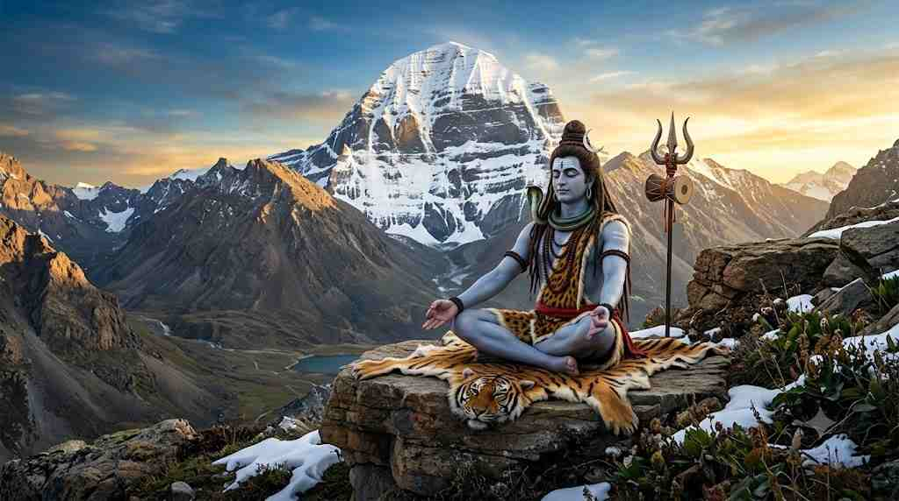

शिव चालीसा में भगवान शिव के स्वरूप, गुण, शक्ति और भक्तों के प्रति उनकी करुणा का वर्णन किया गया है। शिव चालीसा का पाठ हिंदू परंपरा में भगवान शिव की भक्ति और आराधना का एक साधन माना जाता है। श्रद्धा से इसका पाठ करने से भक्तों को नकारात्मक शक्तिओ और मृत्यु का भय नहीं सताता.

॥ दोहा ॥
जय गणेश गिरिजा सुवन, मंगल मूल सुजान ।
कहत अयोध्यादास तुम, देहु अभय वरदान ॥
॥ चौपाई ॥
जय गिरिजा पति दीन दयाला ।
सदा करत सन्तन प्रतिपाला ॥
भाल चन्द्रमा सोहत नीके ।
कानन कुण्डल नागफनी के ॥
अंग गौर शिर गंग बहाये ।
मुण्डमाल तन क्षार लगाए ॥
वस्त्र खाल बाघम्बर सोहे ।
छवि को देखि नाग मन मोहे ॥
मैना मातु की हवे दुलारी ।
बाम अंग सोहत छवि न्यारी ॥
कर त्रिशूल सोहत छवि भारी ।
करत सदा शत्रुन क्षयकारी ॥
नन्दि गणेश सोहै तहँ कैसे ।
सागर मध्य कमल हैं जैसे ॥
कार्तिक श्याम और गणराऊ ।
या छवि को कहि जात न काऊ ॥
देवन जबहीं जाय पुकारा ।
तब ही दुख प्रभु आप निवारा ॥
किया उपद्रव तारक भारी ।
देवन सब मिलि तुमहिं जुहारी ॥
तुरत षडानन आप पठायउ ।
लवनिमेष महँ मारि गिरायउ ॥
आप जलंधर असुर संहारा ।
सुयश तुम्हार विदित संसारा ॥
त्रिपुरासुर सन युद्ध मचाई ।
सबहिं कृपा कर लीन बचाई ॥
किया तपहिं भागीरथ भारी ।
पुरब प्रतिज्ञा तासु पुरारी ॥
दानिन महँ तुम सम कोउ नाहीं ।
सेवक स्तुति करत सदाहीं ॥
वेद नाम महिमा तव गाई।
अकथ अनादि भेद नहिं पाई ॥
प्रकटी उदधि मंथन में ज्वाला ।
जरत सुरासुर भए विहाला ॥
कीन्ही दया तहं करी सहाई ।
नीलकण्ठ तब नाम कहाई ॥
पूजन रामचन्द्र जब कीन्हा ।
जीत के लंक विभीषण दीन्हा ॥
सहस कमल में हो रहे धारी ।
कीन्ह परीक्षा तबहिं पुरारी ॥
एक कमल प्रभु राखेउ जोई ।
कमल नयन पूजन चहं सोई ॥
कठिन भक्ति देखी प्रभु शंकर ।
भए प्रसन्न दिए इच्छित वर ॥
जय जय जय अनन्त अविनाशी ।
करत कृपा सब के घटवासी ॥
दुष्ट सकल नित मोहि सतावै ।
भ्रमत रहौं मोहि चैन न आवै ॥
त्राहि त्राहि मैं नाथ पुकारो ।
येहि अवसर मोहि आन उबारो ॥
लै त्रिशूल शत्रुन को मारो ।
संकट से मोहि आन उबारो ॥
मात-पिता भ्राता सब होई ।
संकट में पूछत नहिं कोई ॥
स्वामी एक है आस तुम्हारी ।
आय हरहु मम संकट भारी ॥
धन निर्धन को देत सदा हीं ।
जो कोई जांचे सो फल पाहीं ॥
अस्तुति केहि विधि करैं तुम्हारी ।
क्षमहु नाथ अब चूक हमारी ॥
शंकर हो संकट के नाशन ।
मंगल कारण विघ्न विनाशन ॥
योगी यति मुनि ध्यान लगावैं ।
शारद नारद शीश नवावैं ॥
नमो नमो जय नमः शिवाय ।
सुर ब्रह्मादिक पार न पाय ॥
जो यह पाठ करे मन लाई ।
ता पर होत है शम्भु सहाई ॥
ॠनियां जो कोई हो अधिकारी ।
पाठ करे सो पावन हारी ॥
पुत्र हीन कर इच्छा जोई ।
निश्चय शिव प्रसाद तेहि होई ॥
पण्डित त्रयोदशी को लावे ।
ध्यान पूर्वक होम करावे ॥
त्रयोदशी व्रत करै हमेशा ।
ताके तन नहीं रहै कलेशा ॥
धूप दीप नैवेद्य चढ़ावे ।
शंकर सम्मुख पाठ सुनावे ॥
जन्म जन्म के पाप नसावे ।
अन्त धाम शिवपुर में पावे ॥
कहैं अयोध्यादास आस तुम्हारी ।
जानि सकल दुःख हरहु हमारी ॥
॥ दोहा ॥
नित्त नेम कर प्रातः ही, पाठ करौं चालीसा ।
तुम मेरी मनोकामना, पूर्ण करो जगदीश ॥
मगसर छठि हेमन्त ॠतु, संवत चौसठ जान ।
अस्तुति चालीसा शिवहि, पूर्ण कीन कल्याण ॥
॥ समाप्त ॥
शिव चालीसा के रचनाकार अयोध्यादास जी माने जाते हैं। शिव चालीसा भगवान शिव की स्तुति में रची गई है जिसमे 40 चौपाइयों वाली भक्तिपूर्ण रचना है। “चालीसा” का अर्थ ही चालीस पदों या चौपाइयों वाली स्तुति होता है।
शिव चालीसा में भगवान शिव के विभिन्न स्वरूपों, गुणों और लीलाओं का वर्णन किया गया है। इसमें भगवान को भोलेनाथ, महादेव, नीलकंठ, त्रिपुरारी और कैलाशपति जैसे अनेक नामों से स्मरण किया जाता है।
भगवान शिव प्रमुख देवताओं में से एक देवता हैं। उन्हें देवों के देव महादेव भी कहा जाता है, भगवान शिव को भक्त अलग अलग नामो जैसे शिव, महादेव, भोलेनाथ, शंकर, शंभू, रुद्र, महाकाल, नीलकंठ, पशुपति, नटराज और त्रिलोचन आदि नमो से जाना जाता है। भगवान शिव का स्वरूप जितना रहस्यमय है, उतना ही प्रेरणादायक भी है। वे एक ओर संहार के देवता माने जाते हैं, तो दूसरी ओर करुणा, शांति, तपस्या और कल्याण के प्रतीक हैं।
भगवान शिव का रूप (स्वरूप) अपने आप में एक संदेश है, उनकी जटाओं में बहती माँ गंगा यह बताती हैं कि शक्ति को भी धारण करने के लिए धैर्य आवश्यक होता है। उनके मस्तक पर विराजमान अर्धचंद्र मन और समय पर नियंत्रण का प्रतीक माना जाता है। गले में लिपटा नाग भय पर विजय का संदेश देता है, जबकि शरीर पर लगी भस्म हमें याद दिलाती है कि संसार की हर भौतिक वस्तु एक दिन नष्ट हो जाती है।
शिव, महादेव, भोलेनाथ, शंकर, शंभू, रुद्र, महाकाल, नीलकंठ, पशुपति, नटराज और त्रिलोचन आदि नमो से जाना जाता है।
माता पार्वती हैं।
भगवान गणेश और भगवान कार्तिकेय |
नंदी बैल है।
अर्धचंद्र सुशोभित है।
माँ गंगा के विराजमान है|
त्रिशूल प्रमुख अस्त्र है।
कैलाश पर्वत
भगवान शिव को सरल, दयालु और भक्तों पर शीघ्र प्रसन्न हो जाते है, इसलिए उन्हें भोलेनाथ कहा जाता है।
इसे भी पढ़े : बजरंग बाण
इसे भी पढ़े : श्री हनुमान चालीसा
इसे भी पढ़े : शिव चालीसा